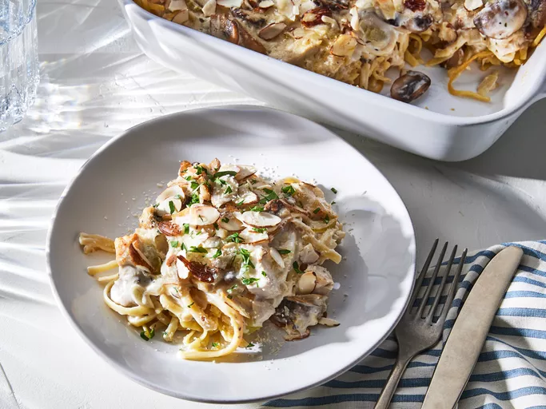

Tetrazzini

Description
Turkey Tetrazzini is a quick and easy way to turn leftover turkey into a family favorite.
Put your leftover turkey to good use with this test kitchen-approved turkey tetrazzini recipe.
Ingredients
- Pasta
- Butter
- Vegetable
- Seasonings
- White wine
- Turkey
- Canned soup
- Broth
- Parmesan
Step by Step
- Boil and drain the pasta, then transfer it to a prepared baking dish.
- Cook the vegetables in butter, then stir in the seasonings.
- Deglaze the pan with wine, if using.
- Stir in the turkey, soup, sour cream, and broth. Cook until hot and bubbly.
- Spoon the turkey mixture over pasta and sprinkle with cheese and almonds.
- Bake the turkey tetrazzini until hot and bubbly.